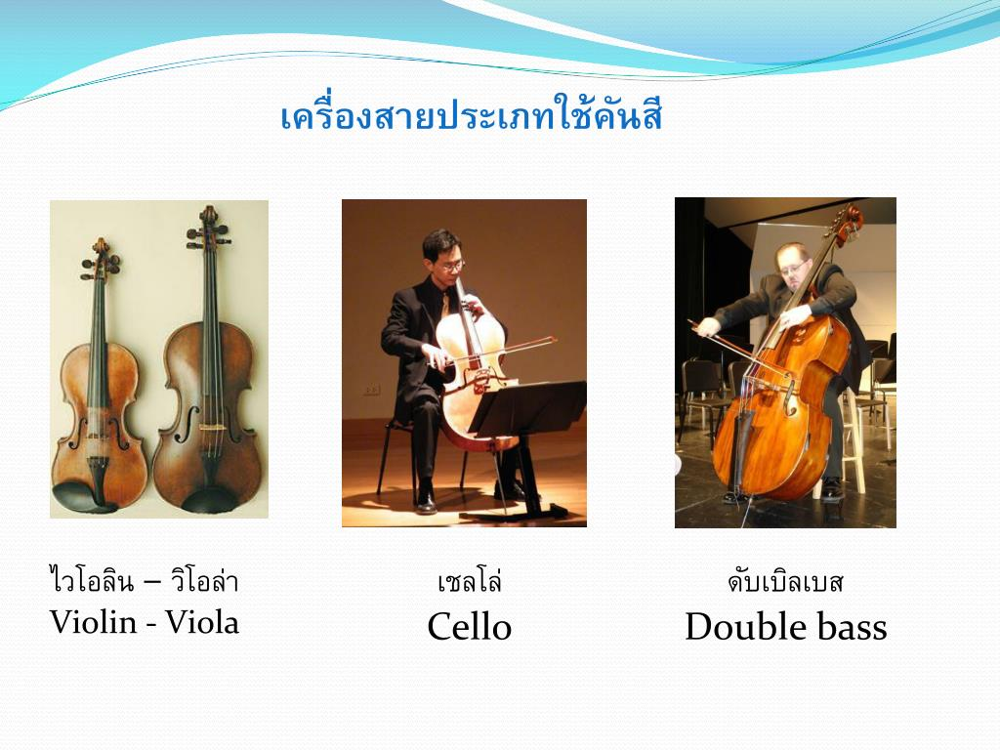

|
โครงสร้างเว็บไซค์
ตัวอย่างChamber Music
โลโก้
การอัพโหลดเว็บ |
ตระกูลประเภทเครื่องสาย |
เครื่องสาย (string instrument) เป็นการจัดประเภทของเครื่องดนตรีสากล โดยเครื่องดนตรีสากลประเภทเครื่องสายนี้ หมายถึง เครื่องดนตรีที่ทำให้เกิดเสียงโดยการสั่นสะเทือนของสายลวด เชือก เอ็น หรือไนลอน และมีตัวกำธรเสียง ทำหน้าที่ขยายเสียงให้ดังมากขึ้น คุณภาพของเสียงขึ้นอยู่กับรูปร่าง และวัตถุที่ใช้ทำ การสั่นสะเทือนของสายอาจทำได้โดยการสี หรือดีดโดยอาจกระทำโดยตรง หรือเพิ่มกลไกให้ยุ่งยากขึ้น เครื่องสายที่พบเห็นในปัจจุบัน นิยมใช้วิธีทำให้เกิดเสียงได้ 2 วิธี คือ วิธีสี และวิธีดีด เครื่องสายประเภทใช้คันสี เครื่องดนตรีกลุ่มนี้ได้แก่
|
- ไวโอลิน (Violin) เครื่องดนตรีที่ใช้เล่นท่วงทำนอง ประกอบด้วยสาย 4 สาย แต่ละสายเทียบเสียงห่างกันคู่ 5 เพอร์เฟค คือ เสียง G-D-A-E
- วิโอลา (Viola) มีรูปร่างเหมือนไวโอลินทุกประการ แต่มีขนาดใหญ่กว่าไวโอลิน ตั้งเสียงต่ำกว่าไวโอลินลงไปอีกคู่ 5 เพอร์เฟค คือ C-G-D-A มีเสียงทุ้มและนุ่มนวลกว่าไวโอลิน
- เชลโล (Cello) มีรูปร่างเหมือนไวโอลินและวิโอลา แต่มีขนาดโตกว่ามาก ขณะเล่นต้องนั่งเก้าอี้ เอาเครื่องไว้ระหว่างขาทั้งสองข้าง เสียงต่ำกว่าวิโอลา 1 ช่วงคู่ 8 คือ C-G-D-A เสียงของเชลโลนุ่มนวล แสดงอารมณ์เศร้าสร้อย
- ดับเบิลเบส (Double Bass) เป็นเครื่องที่มีขนาดใหญ่ที่สุดในตระกูลไวโอลิน ผู้บรรเลงต้องยืนเล่น เสียงของดับเบิลเบส ต่ำสุดแสดงถึงความมีอำนาจ ความกลัว ความลึกลับ สายทั้งสี่ตั้งเสียงห่างกันเป็นคู่ 4 เพอร์เฟค คือ E-A-D-G
|
|  |
เครื่องสายประเภทเครื่องดีด (Plucked String) เครื่องดนตรีกลุ่มนี้ได้แก่
- ฮาร์ป (Harp) เป็นพิณโบราณขนาดใหญ่ มีประวัติเก่าแก่มาก มีสายขึงอยู่ทั้งหมด 47 สาย ช่วงเสียงกว้าง 6 Octaves ใช้บรรเลงในวงดนตรีประเภทออร์เคสตรา
- กีตาร์ (Guitar) กีตาร์ประกอบด้วยสาย 6 สาย โดยตั้งระดับเสียงต่ำไปหาสูง ในแต่ละสายดังนี้ E, A, D, G, B ,E
- ลูท (Lute) เป็นพิณชนิดหนึ่งที่เป็นต้นกำเนิดของเครื่องสายประเภทดีด มีรูปทรงเหมือนผลส้มผ่าซีก มีสะพานวางนิ้วที่มีช่องปรากฏอยู่ เช่นเดียวกับกีตาร์ แบนโจ แมนโดลิน ฯลฯ ชาวอาหรับโบราณนิยมกันมากแต่ปัจจุบันนี้ไม่ได้รับความนิยม
- แมนโดลิน (Mandolin) เป็นเครื่องดนตรีตระกูลลูท มีสาย 4 คู่ (8 สาย) หรือ 6 คู่ (12 สาย) ตั้งเสียงเท่ากันเป็นคู่ มีลูกบิดคล้ายกีตาร์ใช้ในการตั้งเสียง และมีนม (Feat) รองรับสาย เวลาเล่นจะใช้นิ้วมือซ้ายจับตัวแมนโดลินและใช้มือขวาดีด ลักษณะการดีดคล้ายการดีดกีตาร์โดยใช้ปิ๊ค (Pick) เสียงที่เกิดจากแมนโดลินมีความไพเราะเป็นเสียงที่มีคุณภาพ เร้าอารมณ์ได้ดีโดยเฉพาะอารมณ ์โศกเศร้าเกี่ยวกับความรัก แมนโดลินมีถิ่นกำเนิดที่ประเทศอิตาลี เป็นเครื่องดนตรีที่ชาวอิตาเลียนนิยมกันแพร่หลาย
|
 |
|


{kind=link}